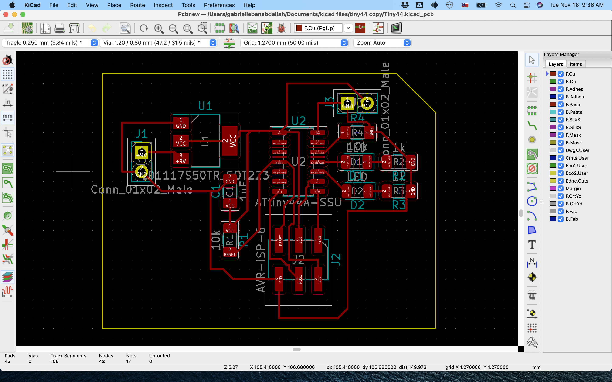

A6: Designing PCB - Small and big traces
From circuit design to programming
For this assignment we had to 1)design our own PCB, 2) surface mount solder it and 3) program it. That last step didn't work for me but I got plenty of practice in steps 1 and 2. Here are a few stats on this assignment:
1. Milled PCBs: 4
2. Soldered PCBs: 3
3. Soldering injuries: 2
4. Soldering time: From 2h to 30 min
5. Programmed PCBs: 0
First round
I slightly adapted Nadya's original design by adding a connector for my sensor and a resistor. One thing I forgot to do that would have made my life easier is making the traces and pads bigger. But I decided to keep them small and see what happens (spoiler: small traces break more easily, especially if you're new at SM soldering.)
Once the design was validated, I got ready for milling. Based on my learnings from A5, I made sure all my offset measurements (material and plan) were correct. I milled two PCBs, anticipating potential setbacks during the soldering phase.


The results.


Now getting ready for soldering!


Soldering in progress and final result.


Testing.

I thank Danli and Blair for helping me out with the programming part! Danli offered to help with Arduino-as-programming-board setup and Blair pointed me towards the High Low Tech resource page on how to do AVR programming with the Arduino IDE. Despite being a good tutorial, it didn't work out because my circuit wasn't sound.

So back to the soldering station!
Second round


I soldered my other board but it also had problems --most notablythe GND of my microcontroller not being connected to anything :)
So back to the design table!
Third round
I remilled the new PCB after making the adjusments in kicad (also needed a 10k resistor between GND and pin 12). I went back to the MILL and went through the same process. As Danli pointed out though, the double sided tape had lost stickiness (?) and when the time came to cut the outline of circuit, the speed of the endmill sent the copper board flying inside the desktop CNC mill. Still totally solderable though.